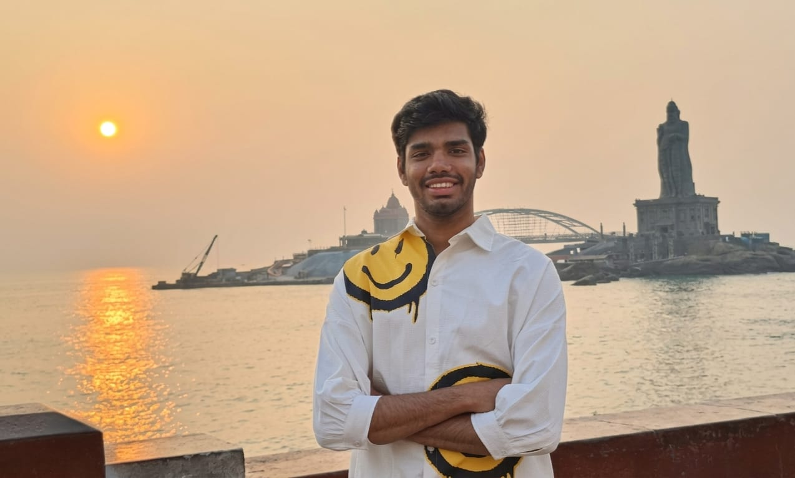

Multimodal self-supervised learning
Learning tissue representations by jointly encoding histopathology images and paired text.
RENAL HISTOPATHOLOGY · WHOLE SLIDE IMAGE
WHOLE-SLIDE IMAGE ANNOTATIONS
PhD Researcher — ICube, University of Strasbourg
Ontology-Enhanced Multi-Modal Self-Supervised Learning for Histopathology
I build deep learning models that read tissue the way pathologists do by combining image, language, and domain ontologies to segment and understand histopathology slides to find rare disease symptoms. I also focus on reducing the annotation burden of pathology slides by developing deep learning based segmentation models that learn from partial annotations.

I'm Himala Praharsha — I go by Praharsha. I recently completed my BS‑MS in Data Sciences at IISER Thiruvananthapuram, and this autumn I'm joining ICube at the University of Strasbourg as a doctoral researcher under the ENACT-HealthTech program, within École Doctorale MSII.
My PhD, “Ontology-Enhanced Multi-Modal Self-Supervised Learning for Histopathology,” will explore how models can learn what a pathologist knows — the vocabulary, the hierarchy of tissue structures, the visual grammar of disease without needing every pixel hand-labeled. I work at the intersection of self-supervised vision, vision-language models, and structured domain knowledge (ontologies) to make histopathology segmentation more label-efficient and clinically grounded.
Before this, my undergraduate research moved across attention mechanisms in several imaging domains such as driver monitoring, agricultural pest detection, and neonatal EEG — before settling into medical imaging, where my major project addressed multi-structure renal histopathology segmentation from partial annotations.
Learning tissue representations by jointly encoding histopathology images and paired text.
Injecting structured domain knowledge (tissue and disease ontologies) into vision-language pretraining.
Designing architectures that handle partially annotated data for precise structure segmentation.
Adapting CLIP-styl models to the pathology domain to pixel-level predictions.
Developed vision-language segmentation model that learn multiple renal tissue structures simultaneously from incomplete, partially-annotated ground truth.
Computers in Biology and Medicine, Vol. 180, 108945
doi.org/10.1016/j.compbiomed.2024.108945 →Sensors, 24, 7858
doi.org/10.3390/s24237858 →For the full and most current list, see Google Scholar →
ICube (UMR 7357), University of Strasbourg · ENACT HealthTech Program · École Doctorale MSII (ED 269)
Indian Institute of Science Education and Research, Thiruvananthapuram (IISER TVM)
Indian Institute of Science Education and Research, Thiruvananthapuram
Reach out about the PhD work, collaborations, or anything histopathology and self-supervised learning.